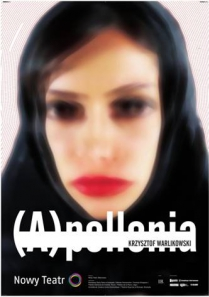

Galeria


Krzysztof Warlikowski to wizjonerski polski reżyser teatralny, znany z nowatorskich i skłaniających do refleksji produkcji, które rzucają wyzwanie tradycyjnym narracjom i poruszają współczesne problemy.
Krzysztof Warlikowski (ur. 26 maja 1962 w Szczecinie) – polski reżyser teatralny.
Jest absolwentem I Liceum Ogólnokształcącego im. Marii Skłodowskiej-Curie w Szczecinie. Studiował historię, filozofię i filologię romańską na Uniwersytecie Jagiellońskim, historię teatru greckiego w École Pratique des Hautes Études na Sorbonie. Dyplom reżyserski zdobył na Wydziale Reżyserii Dramatu Państwowej Wyższej Szkoły Teatralnej w Krakowie, gdzie studiował w latach 1989–1993.
W 1991 asystował Krystianowi Lupie przy realizacji spektaklu Malte albo Tryptyk marnotrawnego syna na podstawie utworów Rainera Marii Rilkego w Narodowym Starym Teatrze w Krakowie. W latach 1992–1993 był asystentem Petera Brooka przy spektaklu Peleas – Impresje (Impressions de Pélleas) według opery Peleas i Melisanda Claude’a Debussy’ego w paryskim Bouffes du Nord. Był również asystentem Ingmara Bergmana i Giorgio Strehlera.
Reżyseruje w kraju i za granicą; do tej pory zrealizował ponad trzydzieści spektakli, w tym 11 inscenizacji dramatów Szekspira m.in. Hamleta w Tel Awiwie i Warszawie, Wieczór trzech króli w Stuttgarcie, Poskromienie złośnicy w Warszawie, Burzę w Stuttgarcie i Warszawie, Makbeta w Hanowerze. Drugim ważnym polem zainteresowań teatralnych Warlikowskiego jest dramat antyczny: ma na koncie m.in. głośne przedstawienia Elektry Sofoklesa i Bachantek Eurypidesa. Inscenizuje również dramaty współczesne, m.in. Bernarda-Marie Koltèsa i Sarah Kane. W 2005 roku wyreżyserował spektakl Krum Hanocha Levina (TR Warszawa w koprodukcji ze Starym Teatrem w Krakowie), który został doskonale przyjęty przez większość krytyków, odniósł też sukces na festiwalu teatralnym w Awinionie. W 2006 roku odbyła się premiera wyreżyserowanej przez Warlikowskiego Madame de Sade Yukio Mishimy w Tonnel Groep w Amsterdamie. Na początku 2007 Warlikowski przygotował inscenizację sztuki nagrodzonej Pulitzerem Anioły w Ameryce, autorstwa Tony’ego Kushnera, w przekładzie Jacka Poniedziałka i z nim w jednej z głównych ról.
W 2000 Warlikowski zadebiutował jako reżyser operowy, przygotowując w Teatrze Wielkim w Warszawie prapremierę opery Roxanny Panufnik The Music Programm. W tym samym roku wyreżyserował Don Carlosa Giuseppe Verdiego, a w kolejnych latach m.in. Ignoranta i szaleńca Pawła Mykietyna (2001), Ubu Rexa Krzysztofa Pendereckiego (2003) i Wozzecka Albana Berga (2006), którego libretto oparte jest na dramacie Georga Büchnera. Jego ostatnimi realizacjami operowymi są Ifigenia w Taurydzie Glucka (2006) i Sprawa Makropulos Janáčka (2007) w Operze Paryskiej. W 2008 roku jako pierwszy polski reżyser powojenny zrealizował dzieło Wagnera na Zachodzie. W przygotowywanym Parsifalu spodziewano się niewygodnych nawiązań historycznych. Dzieło przyjęto z buczeniem, okrzykami i jednoczesnymi oklaskami. Skandal wywołały przerywające operę fragmenty filmu Roberto Rosselliniego „Niemcy w roku zero”, które odebrano jako zestawienie dzieła Wagnera z nazizmem. Inni krytycy jednak nazywają to przewrażliwieniem, doceniając pozostałe walory inscenizacji. W 2009 roku wyreżyserował w Operze Paryskiej Króla Rogera Karola Szymanowskiego.
Od 1999 jest związany z warszawskim Teatrem Rozmaitości (później: TR Warszawa). W 2008 roku został dyrektorem artystycznym Nowego Teatru w Warszawie.